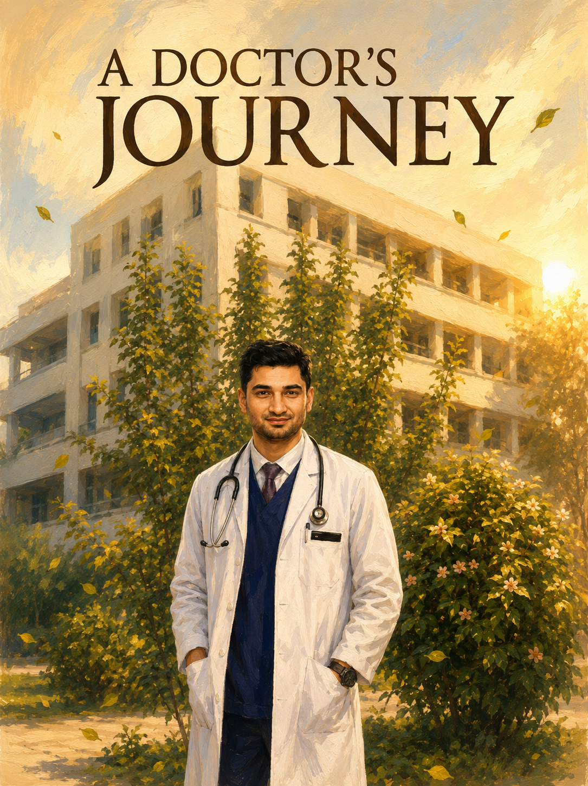

Emergency Medicine
Comprehensive emergency assessment, stabilization, and treatment for acute medical conditions.
Dedicated to providing personalized healthcare, accurate diagnosis, and evidence-based treatment while building meaningful relationships with patients and families.
Dr.Gyan Raj Aryal
About Me
I am a medical doctor specializing in Emergency Medicine with extensive experience in emergency care, trauma management, critical care, and patient stabilization. My professional journey has taken me through leading hospitals and healthcare institutions in Nepal, where I have served patients in high-pressure clinical environments requiring rapid decision-making and precision.
With a strong foundation in acute medical care and a commitment to continuous learning, I strive to provide evidence-based treatment while maintaining compassion and empathy for every patient and family I serve.
My mission is simple: to deliver timely, effective, and patient-centered healthcare when it matters most.
Comprehensive emergency assessment, stabilization, and treatment for acute medical conditions.
Advanced trauma management, resuscitation, and intensive patient care.
Teaching, mentoring, and supporting the next generation of healthcare professionals.
Applying evidence-based medicine and continuously improving clinical practice.
Experience

Provided emergency and general medical care, participated in patient assessment, diagnosis, treatment planning, and coordinated multidisciplinary clinical services.
Worked in one of Nepal's leading tertiary care hospitals, managing acute medical cases and delivering comprehensive patient care in a high-volume clinical environment.
Providing outpatient and emergency medical services with a focus on timely diagnosis, treatment, and preventive healthcare.
Teaching and mentoring students in emergency medicine and trauma care while supporting clinical skill development and practical training.
Patient Problems
Contact
Use the form to request an appointment, ask a healthcare question, or connect for clinical education.